从十七世纪近代数学兴起之初，函数概念就一直居于数学思想的核心。（“函数”一词似乎是莱布尼茨最早使用的。）函数关系的意义远远超出数学的范围，这里自然只关注数学意义上的函数，即数学量之间由某种数学关系、法则或“运算”建立的联系。函数关系支配着数学和自然科学的很大一部分，在分析、几何、力学和其他领域中处处可见。例如，理想气体的压强是密度和温度的函数，运动分子的位置是时间的函数，圆柱的体积和表面积是半径和高度的函数。每当一组量 a , b , c , … a,b,c,\ldots a , b , c , … x , y , z , … x,y,z,\ldots x , y , z , … a , b , c , … a,b,c,\ldots a , b , c , … 依赖于 x , y , z , … x,y,z,\ldots x , y , z , … x , y , z , … x,y,z,\ldots x , y , z , … 函数 。下面几个公式就是函数关系的例子。
(a) 公式 A = a 2 A=a^2 A = a 2 A A A a a a a > 0 a>0 a > 0 A A A a a a
(b) 公式
y = 1 − x 2
y=\sqrt{1-x^2}
y = 1 − x 2 把 y y y x x x − 1 ≤ x ≤ 1 -1\le x\le1 − 1 ≤ x ≤ 1 x > 0 x>0 x > 0 1 1 1 x x x y y y
(c) 方程
x = t , y = − t 2
x=t,\qquad y=-t^2
x = t , y = − t 2 为每个 t t t x x x y y y x x x y y y t t t x x x y y y P P P t t t P P P t t t P P P 运动 。
(d) 方程
a = x x 2 + y 2 , b = y x 2 + y 2
a=\frac{x}{x^2+y^2},\qquad b=\frac{y}{x^2+y^2}
a = x 2 + y 2 x , b = x 2 + y 2 y 在 x 2 + y 2 ≠ 0 x^2+y^2\ne0 x 2 + y 2 = 0 a , b a,b a , b x , y x,y x , y x , y x,y x , y a , b a,b a , b ( x , y ) (x,y) ( x , y ) ( 0 , 0 ) (0,0) ( 0 , 0 ) ( a , b ) (a,b) ( a , b ) ( a , b ) (a,b) ( a , b ) ( x , y ) (x,y) ( x , y ) x , y x,y x , y a , b a,b a , b ( x , y ) (x,y) ( x , y ) ( a , b ) (a,b) ( a , b )
在这些例子里，函数关系都由简单的公式表示，公式从某些量确定另外一些量。¹ 左端的量称为因变量 ，用右端的自变量 来表示。对于每组给定的自变量值，给因变量指定唯一一组值的数学法则，就称为函数。变量取名为 x x x y y y t t t x , y x,y x , y x , y x,y x , y a , b a,b a , b
要说明 y y y x x x y y y x x x
原注 1（第 18 页） 以后我们会逐渐认识到，还必须考虑无法用简单公式这样表示的函数。例如见第 25 页。
原注 2（第 18 页） 科学文献中常用这种说法，有些过分拘谨的教科书却避而不用。如果咬文嚼字的“精确”与实质无关，就无须为它束缚手脚。
a. 映射与图像
函数的定义域和值域
在几何上，通常把自变量看作一维或多维空间中一点的坐标。在例 (b) 中，这是 x x x x , y x,y x , y 定义域 。例 (a) 的定义域是整条 a a a − 1 ≤ x ≤ 1 -1\le x\le1 − 1 ≤ x ≤ 1 t t t x , y x,y x , y
对于定义域中每个点 P P P Q Q Q Q Q Q P P P 像 。我们说函数把 P P P Q Q Q x , y x,y x , y P = ( 1 , 2 ) P=(1,2) P = ( 1 , 2 ) a , b a,b a , b Q = ( 1 5 , 2 5 ) Q=(\tfrac15,\tfrac25) Q = ( 5 1 , 5 2 ) Q Q Q 值域 。¹ 值域中每个 Q Q Q
原注 1（第 19 页） 常把点 Q Q Q P P P Q Q Q
在例 (c) 中，t t t x , y x,y x , y t t t x , y x,y x , y y = − x 2 y=-x^2 y = − x 2 y = − x 2 y=-x^2 y = − x 2 t t t 到整个 抛物线 y = − x 2 y=-x^2 y = − x 2
在例 (d) 中，值域由 a , b a,b a , b ( a , b ) (a,b) ( a , b ) x , y x,y x , y x 2 + y 2 ≠ 0 x^2+y^2\ne0 x 2 + y 2 = 0 a = x / ( x 2 + y 2 ) a=x/(x^2+y^2) a = x / ( x 2 + y 2 ) b = y / ( x 2 + y 2 ) b=y/(x^2+y^2) b = y / ( x 2 + y 2 ) ( x , y ) (x,y) ( x , y ) ( a , b ) (a,b) ( a , b ) a , b a,b a , b ( a , b ) (a,b) ( a , b ) x = a / ( a 2 + b 2 ) x=a/(a^2+b^2) x = a / ( a 2 + b 2 ) y = b / ( a 2 + b 2 ) y=b/(a^2+b^2) y = b / ( a 2 + b 2 ) x , y x,y x , y a , b a,b a , b x 2 + y 2 = r 2 x^2+y^2=r^2 x 2 + y 2 = r 2 a , b a,b a , b a 2 + b 2 = 1 / r 2 a^2+b^2=1/r^2 a 2 + b 2 = 1/ r 2
本章和以下各章几乎只讨论一个自变量（例如 x x x y y y x , y x,y x , y 图像 ：凡点 ( x , y ) (x,y) ( x , y ) x x x
原注 2（第 19 页） 不过，一开始就应强调，在许多问题中，多变量函数同样自然地出现。第二卷将系统讨论它们。
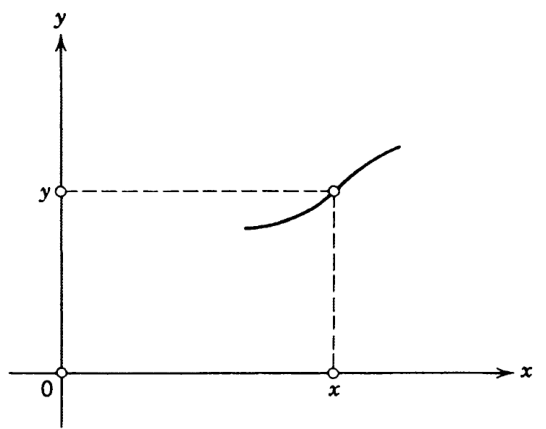
图 1.7 函数的图像 把函数解释为一个映射，由 x x x y y y x x x y y y x x x x x x y y y y y y O O O x x x x x x O O O y y y y y y y = a x + b y=ax+b y = a x + b a , b a,b a , b y y y x x x y = ( a x + b ) / ( c x + d ) y=(ax+b)/(cx+d) y = ( a x + b ) / ( c x + d ) a , b , c , d a,b,c,d a , b , c , d
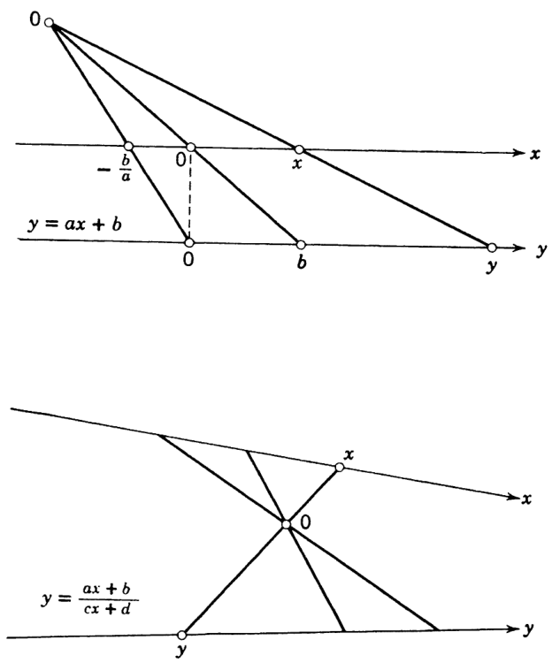
图 1.8 映射 从某个中心 N N N S S S S ′ S' S ′ S S S S ′ S' S ′ P P P P ′ P' P ′ 球极投影 。正是这类例子，使人自然想到把函数解释为“映射”。
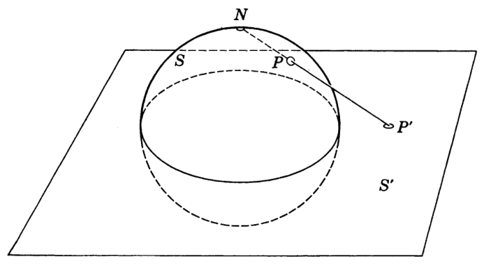
图 1.9 球极投影 当涉及更多的自变量或因变量时，用映射来解释函数比用图像更灵活、更合适。到第二卷，这一点将表现得十分明显。
b. 连续变量的函数。函数的定义域和值域
一个自变量 x x x x x x y y y 定义域 就是使函数有定义的全部 x x x y y y 连续变量 的函数，借以区别于例如只在 x x x y = 1 − x 2 y=\sqrt{1-x^2} y = 1 − x 2 − 1 ≤ x ≤ + 1 -1\le x\le+1 − 1 ≤ x ≤ + 1 y = 1 / x y=1/x y = 1/ x x < 0 x<0 x < 0 x > 0 x>0 x > 0 y = x 2 y=x^2 y = x 2 x x x − ∞ < x < + ∞ -\infty<x<+\infty − ∞ < x < + ∞ y = ( x 2 − 1 ) ( 4 − x 2 ) y=\sqrt{(x^2-1)(4-x^2)} y = ( x 2 − 1 ) ( 4 − x 2 ) 1 ≤ x ≤ 2 1\le x\le2 1 ≤ x ≤ 2 − 2 ≤ x ≤ − 1 -2\le x\le-1 − 2 ≤ x ≤ − 1
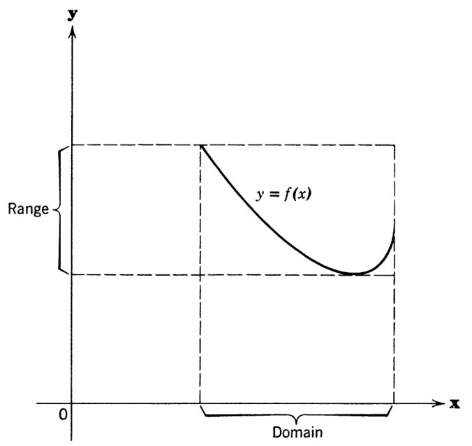
图 1.10 从图像看函数的定义域和值域 原注 1（第 22 页） 本书通常把“区间”一词留给“有界”的，也就是两个端点都是确定有限数的“有限”区间。对于正文中所用的较广概念，则可用“凸集”一词，指一个集合只要包含两点，就必定包含两点之间的所有点。
函数用 f , F , g f,F,g f , F , g x x x y y y y = f ( x ) y=f(x) y = f ( x ) y = F ( x ) y=F(x) y = F ( x ) y = g ( x ) y=g(x) y = g ( x ) y = y ( x ) y=y(x) y = y ( x ) y y y x x x f ( x ) f(x) f ( x ) x 2 + 1 x^2+1 x 2 + 1 f ( 3 ) = 3 2 + 1 = 10 f(3)=3^2+1=10 f ( 3 ) = 3 2 + 1 = 10 f ( − 1 ) = ( − 1 ) 2 + 1 = 2 f(-1)=(-1)^2+1=2 f ( − 1 ) = ( − 1 ) 2 + 1 = 2
原注 2（第 22 页） 后一种记法着重标明变量，没有另外用 f f f f : x → y f:\ x\to y f : x → y x x x y y y f f f
函数关系的性质
函数 f ( x ) f(x) f ( x ) f ( x ) = x 2 + 1 f(x)=x^2+1 f ( x ) = x 2 + 1 f ( x ) = 1 + sin 2 x f(x)=\sqrt{1+\sin^2 x} f ( x ) = 1 + sin 2 x x x x
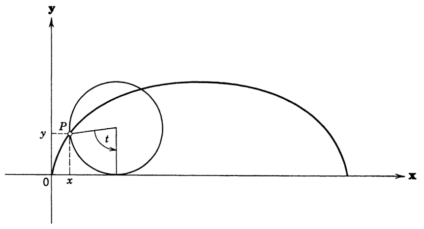
图 1.11 摆线 从逻辑上说，我们无须局限于这些由几何作图或机械运动产生的函数。凡是能为各个 x x x y y y y y y x x x
* 函数定义域的扩张与限制
即使函数已由显式给出，也须认识到，任何完整的函数描述都必须规定函数的定义域。对我们来说，由“在 0 < x < 2 0<x<2 0 < x < 2 f ( x ) = x 2 f(x)=x^2 f ( x ) = x 2 f f f − 2 < x < 2 -2<x<2 − 2 < x < 2 g ( x ) = x 2 g(x)=x^2 g ( x ) = x 2 g g g 0 < x < 2 0<x<2 0 < x < 2 f f f g g g f f f f f f g g g 限制 ，或称 g g g f f f 扩张 。同一个 f f f f f f h h h 0 < x < 2 0<x<2 0 < x < 2 h ( x ) = x 2 h(x)=x^2 h ( x ) = x 2 − 2 < x ≤ 0 -2<x\le0 − 2 < x ≤ 0 h ( x ) = − x 2 h(x)=-x^2 h ( x ) = − x 2
c. 图像表示。单调函数
解析几何的基本思想，是给原先由某种几何性质确定的曲线找出解析表示。通常把一个直角坐标，例如 y y y x x x y = f ( x ) y=f(x) y = f ( x ) y = x 2 y=x^2 y = x 2 1 1 1 y = 1 − x 2 y=\sqrt{1-x^2} y = 1 − x 2 y = − 1 − x 2 y=-\sqrt{1-x^2} y = − 1 − x 2 − ∞ < x < ∞ -\infty<x<\infty − ∞ < x < ∞ − 1 ≤ x ≤ 1 -1\le x\le1 − 1 ≤ x ≤ 1
原注 1（第 24 页） 本书通常不考虑 x x x y y y
反过来，如果从解析地给定的函数 y = f ( x ) y=f(x) y = f ( x ) y y y x x x x x x y = f ( x ) y=f(x) y = f ( x ) x x x y y y 1 1 1 x x x y y y 0 0 0 x x x y y y x x x y y y 0 0 0 1 1 1
多值函数
我们只考虑给定义域内每个 x x x y y y y = f ( x ) y=f(x) y = f ( x ) y = x 2 y=x^2 y = x 2 y = sin x y=\sin x y = sin x x 2 + y 2 = 1 x^2+y^2=1 x 2 + y 2 = 1 y = 1 − x 2 y=\sqrt{1-x^2} y = 1 − x 2 y = − 1 − x 2 y=-\sqrt{1-x^2} y = − 1 − x 2 y 2 − x 2 = 1 y^2-x^2=1 y 2 − x 2 = 1 y = 1 + x 2 y=\sqrt{1+x^2} y = 1 + x 2 y = − 1 + x 2 y=-\sqrt{1+x^2} y = − 1 + x 2 多值函数 表示，并把分别表示曲线各部分的函数称为这个多值函数的单值分支 。为求明确，本书所说的“函数”始终指单值函数。例如当 x ≥ 0 x\ge0 x ≥ 0 x \sqrt{x} x x x x 非负 数。
如果一条曲线是一个 函数的图像，那么任何与 y y y x x x y y y
y = 1 − x 2 , y = − 1 − x 2
y=\sqrt{1-x^2},\qquad y=-\sqrt{1-x^2}
y = 1 − x 2 , y = − 1 − x 2 表示的单位圆，却可以与同一条平行于 y y y
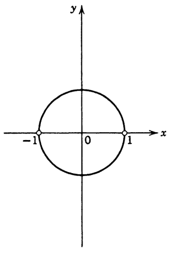
图 1.12 圆的两个分支 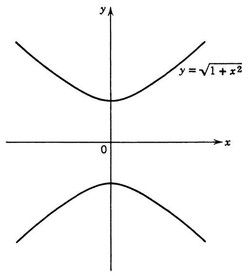
图 1.13 双曲线的两个分支 例
再看几个函数图像的例子。
(a) y y y x x x y = a x y=ax y = a x
(b) y y y x x x y = a x + b y=ax+b y = a x + b x = 0 , y = b x=0,\ y=b x = 0 , y = b a ≠ 0 a\ne0 a = 0 x = − b / a , y = 0 x=-b/a,\ y=0 x = − b / a , y = 0 a = 0 a=0 a = 0
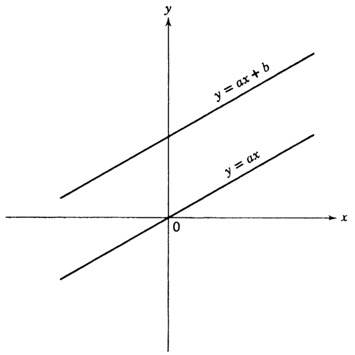
图 1.14 一次函数 (c) y y y x x x y = a / x y=a/x y = a / x a = 1 a=1 a = 1 y = 1 / x y=1/x y = 1/ x
x = 1 时 y = 1 , x = 1 2 时 y = 2 , x = 2 时 y = 1 2 .
x=1\ \text{时}\ y=1,\qquad x=\tfrac12\ \text{时}\ y=2,\qquad x=2\ \text{时}\ y=\tfrac12.
x = 1 时 y = 1 , x = 2 1 时 y = 2 , x = 2 时 y = 2 1 . 其图像（图 1.15）是一条等轴双曲线 ，它关于两坐标轴夹角的两条平分线对称。这个函数显然在 x = 0 x=0 x = 0 x = 0 x=0 x = 0 无穷间断 最简单的例子，后面还要讨论这个概念（第 35 页）。
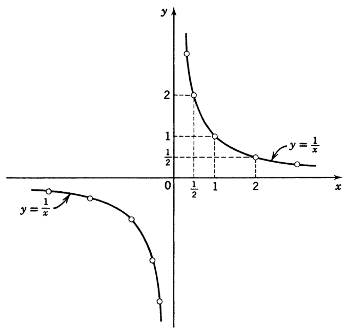
图 1.15 无穷间断 (d) y y y x x x y = x 2 y=x^2 y = x 2 y = x 3 y=x^3 y = x 3 三次抛物线 表示（图 1.17）。
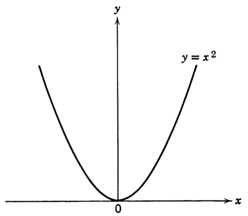
图 1.16 抛物线 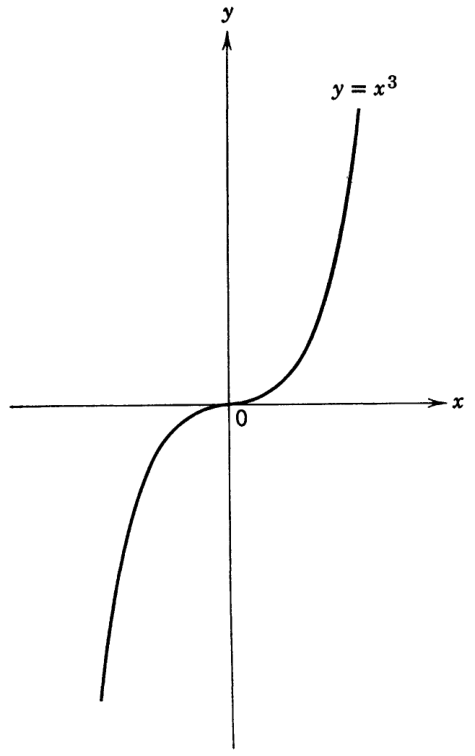
图 1.17 三次抛物线 单调函数
如果函数对于区间内所有 x x x y = a y=a y = a y = f ( x ) y=f(x) y = f ( x ) x x x y y y x < x ′ x<x' x < x ′ f ( x ) < f ( x ′ ) f(x)<f(x') f ( x ) < f ( x ′ ) 单调递增函数 。反之，如果 x x x y y y 单调递减函数 。当 x x x x x x y y y
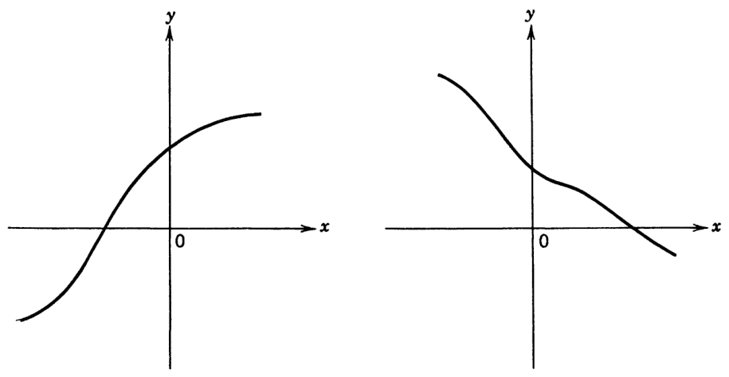
图 1.18 单调函数 偶函数与奇函数
如果 y = f ( x ) y=f(x) y = f ( x ) y y y x = − a x=-a x = − a x = a x=a x = a
f ( − x ) = f ( x ) ,
f(-x)=f(x),
f ( − x ) = f ( x ) , 就称它为偶函数 。例如，y = x 2 y=x^2 y = x 2
f ( − x ) = − f ( x ) ,
f(-x)=-f(x),
f ( − x ) = − f ( x ) , 就称它为奇函数 。例如 y = x y=x y = x y = x 3 y=x^3 y = x 3 y = 1 / x y=1/x y = 1/ x
把不等式画成几何图形往往很有帮助。例如，不等式 y > x 2 y>x^2 y > x 2 y = x 2 y=x^2 y = x 2 x 2 + y 2 < 1 x^2+y^2<1 x 2 + y 2 < 1
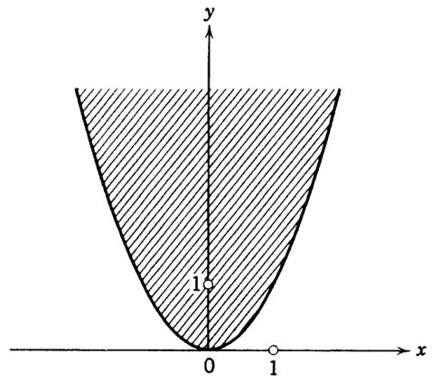
图 1.19 不等式 y > x² 所表示的区域 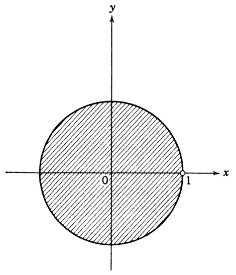
图 1.20 不等式 x² + y² < 1 所表示的区域 若干个不等式常常可以描述较复杂的区域，其边界由不同的部分拼成。例如，单位圆内部位于“第一”象限的部分，由联立不等式
x 2 + y 2 < 1 , x > 0 , y > 0
x^2+y^2<1,\qquad x>0,\qquad y>0
x 2 + y 2 < 1 , x > 0 , y > 0 给出（图 1.21）。
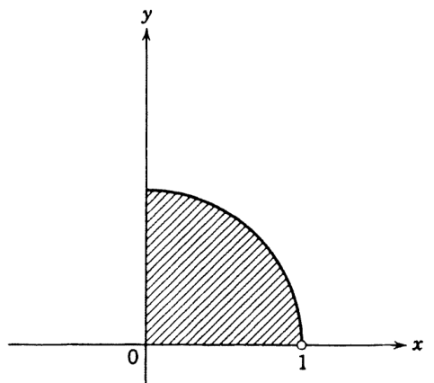
图 1.21 同时满足 x² + y² < 1、x > 0、y > 0 的区域 d. 连续性
直观的说明与精确的说明
刚才考察的函数和图像，表现了微积分中一项极为重要的性质，即连续性 。直观地说，自变量 x x x y = f ( x ) y=f(x) y = f ( x ) y y y y = f ( x ) y=f(x) y = f ( x ) x 0 x_0 x 0 跳跃间断 。例如，函数 f ( x ) = sgn x f(x)=\operatorname{sgn}x f ( x ) = sgn x x > 0 x>0 x > 0 f ( x ) = + 1 f(x)=+1 f ( x ) = + 1 x < 0 x<0 x < 0 f ( x ) = − 1 f(x)=-1 f ( x ) = − 1 f ( 0 ) = 0 f(0)=0 f ( 0 ) = 0 x 0 = 0 x_0=0 x 0 = 0
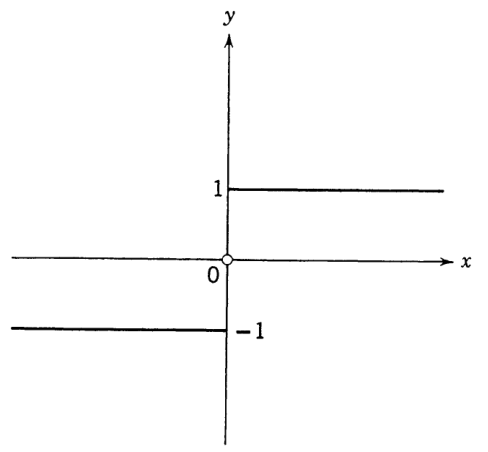
图 1.22 符号函数 f(x) = sgn x 原注 1（第 31 页） 此记号读作 x x x x x x
原注 2（第 31 页） 严格说，“跳跃”一词只指这样一类间断：函数从右边和左边所趋近的值，不都等于 f ( x 0 ) f(x_0) f ( x 0 ) x ≠ 0 x\ne0 x = 0 y = 1 / x y=1/x y = 1/ x x = 0 x=0 x = 0 y = 0 y=0 y = 0
在日常使用初等数学时，我们已经在不知不觉中用到了连续性的观念。用表格来描述一个函数 y = f ( x ) y=f(x) y = f ( x ) x x x y y y 1 / 1000 1/1000 1/1000 1 / 100,000 1/100{,}000 1/100 , 000 x x x f ( x 0 ) f(x_0) f ( x 0 ) x x x f ( x ) f(x) f ( x ) x x x f ( x 0 ) f(x_0) f ( x 0 )
函数 f ( x ) f(x) f ( x ) x 0 x_0 x 0 x x x x 0 x_0 x 0 f ( x ) f(x) f ( x ) f ( x 0 ) f(x_0) f ( x 0 )
任意指定一个“精度范围”或“容许误差”，也就是任意给一个正实数 ϵ \epsilon ϵ f f f x 0 x_0 x 0 x 0 x_0 x 0 x x x x 0 x_0 x 0 δ \delta δ x x x f ( x ) f(x) f ( x ) f ( x 0 ) f(x_0) f ( x 0 ) ∣ f ( x ) − f ( x 0 ) ∣ < ϵ |f(x)-f(x_0)|<\epsilon ∣ f ( x ) − f ( x 0 ) ∣ < ϵ
把 f f f x x x y y y x x x x 0 x_0 x 0 y 0 = f ( x 0 ) y_0=f(x_0) y 0 = f ( x 0 ) y y y y 0 y_0 y 0 J J J J J J 2 ϵ 2\epsilon 2 ϵ J J J y 0 y_0 y 0 ϵ \epsilon ϵ y y y ∣ y − y 0 ∣ < ϵ |y-y_0|<\epsilon ∣ y − y 0 ∣ < ϵ
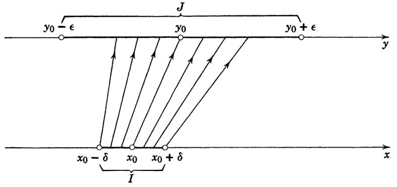
图 1.23 映射 y = f(x) 在 x₀ 处的连续性 f ( x ) f(x) f ( x ) x 0 x_0 x 0 x 0 x_0 x 0 x x x J J J x x x x 0 x_0 x 0 I I I x 0 − δ < x < x 0 + δ x_0-\delta<x<x_0+\delta x 0 − δ < x < x 0 + δ I I I x x x f ( x ) f(x) f ( x ) J J J ∣ f ( x ) − f ( x 0 ) ∣ < ϵ |f(x)-f(x_0)|<\epsilon ∣ f ( x ) − f ( x 0 ) ∣ < ϵ y y y y 0 = f ( x 0 ) y_0=f(x_0) y 0 = f ( x 0 ) ϵ \epsilon ϵ J J J x x x x 0 x_0 x 0 δ \delta δ I I I J J J x x x f f f 连续性的精确定义 。
定义 称函数 f ( x ) f(x) f ( x ) x 0 x_0 x 0 ϵ \epsilon ϵ δ \delta δ f f f ∣ x − x 0 ∣ < δ |x-x_0|<\delta ∣ x − x 0 ∣ < δ x x x
∣ f ( x ) − f ( x 0 ) ∣ < ϵ .
|f(x)-f(x_0)|<\epsilon.
∣ f ( x ) − f ( x 0 ) ∣ < ϵ . 原注 1（第 33 页） 在上面的定义中，区间 I I I J J J x 0 x_0 x 0 y 0 y_0 y 0 ∣ x − x 0 ∣ |x-x_0| ∣ x − x 0 ∣ ∣ y − y 0 ∣ |y-y_0| ∣ y − y 0 ∣ x 0 x_0 x 0 y y y y 0 = f ( x 0 ) y_0=f(x_0) y 0 = f ( x 0 ) J J J x x x x 0 x_0 x 0 I I I I I I x x x y y y J J J
当用 x , y x,y x , y f f f P 0 = ( x 0 , y 0 ) P_0=(x_0,y_0) P 0 = ( x 0 , y 0 ) y 0 − ϵ < y < y 0 + ϵ y_0-\epsilon<y<y_0+\epsilon y 0 − ϵ < y < y 0 + ϵ ( x , y ) (x,y) ( x , y ) P 0 P_0 P 0 J J J f f f x 0 x_0 x 0 J J J x 0 − δ < x < x 0 + δ x_0-\delta<x<x_0+\delta x 0 − δ < x < x 0 + δ I I I I I I J J J
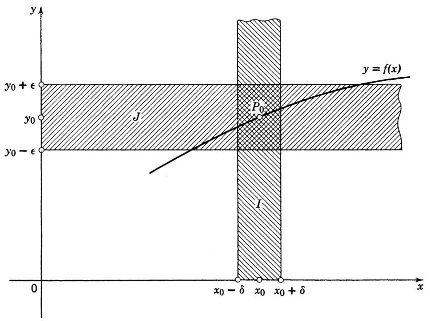
图 1.24 函数 y = f(x) 在 x₀ 处的连续性 以一次函数 f ( x ) = 5 x + 3 f(x)=5x+3 f ( x ) = 5 x + 3
∣ f ( x ) − f ( x 0 ) ∣ = ∣ ( 5 x + 3 ) − ( 5 x 0 + 3 ) ∣ = 5 ∣ x − x 0 ∣ ,
|f(x)-f(x_0)|=|(5x+3)-(5x_0+3)|=5|x-x_0|,
∣ f ( x ) − f ( x 0 ) ∣ = ∣ ( 5 x + 3 ) − ( 5 x 0 + 3 ) ∣ = 5∣ x − x 0 ∣ , 表明映射 y = 5 x + 3 y=5x+3 y = 5 x + 3 5 5 5 ∣ x − x 0 ∣ < ϵ / 5 |x-x_0|<\epsilon/5 ∣ x − x 0 ∣ < ϵ /5 x x x ∣ f ( x ) − f ( x 0 ) ∣ < ϵ |f(x)-f(x_0)|<\epsilon ∣ f ( x ) − f ( x 0 ) ∣ < ϵ δ = ϵ / 5 \delta=\epsilon/5 δ = ϵ /5 f ( x ) f(x) f ( x ) x 0 x_0 x 0 δ < ϵ / 5 \delta<\epsilon/5 δ < ϵ /5 x 0 − δ < x < x 0 + δ x_0-\delta<x<x_0+\delta x 0 − δ < x < x 0 + δ y 0 − ϵ < y < y 0 + ϵ y_0-\epsilon<y<y_0+\epsilon y 0 − ϵ < y < y 0 + ϵ ∣ x − x 0 ∣ |x-x_0| ∣ x − x 0 ∣ ∣ y − y 0 ∣ |y-y_0| ∣ y − y 0 ∣ ∣ x − x 0 ∣ |x-x_0| ∣ x − x 0 ∣ ∣ y − y 0 ∣ |y-y_0| ∣ y − y 0 ∣
另一个例子是 f ( x ) = x 2 f(x)=x^2 f ( x ) = x 2 ∣ x − x 0 ∣ < δ |x-x_0|<\delta ∣ x − x 0 ∣ < δ
∣ f ( x ) − f ( x 0 ) ∣ = ∣ x 2 − x 0 2 ∣ = ∣ x − x 0 ∣ ∣ 2 x 0 + ( x − x 0 ) ∣ ≤ ∣ x − x 0 ∣ ( 2 ∣ x 0 ∣ + ∣ x − x 0 ∣ ) ≤ δ ( 2 ∣ x 0 ∣ + δ ) .
\begin{aligned}
|f(x)-f(x_0)|&=|x^2-x_0^2|=|x-x_0|\,|2x_0+(x-x_0)|\\
&\le |x-x_0|(2|x_0|+|x-x_0|)\le\delta(2|x_0|+\delta).
\end{aligned}
∣ f ( x ) − f ( x 0 ) ∣ = ∣ x 2 − x 0 2 ∣ = ∣ x − x 0 ∣ ∣2 x 0 + ( x − x 0 ) ∣ ≤ ∣ x − x 0 ∣ ( 2∣ x 0 ∣ + ∣ x − x 0 ∣ ) ≤ δ ( 2∣ x 0 ∣ + δ ) . 容易验证，只须选取 δ = − ∣ x 0 ∣ + ϵ + ∣ x 0 ∣ 2 \delta=-|x_0|+\sqrt{\epsilon+|x_0|^2} δ = − ∣ x 0 ∣ + ϵ + ∣ x 0 ∣ 2 ∣ f ( x ) − f ( x 0 ) ∣ < ϵ |f(x)-f(x_0)|<\epsilon ∣ f ( x ) − f ( x 0 ) ∣ < ϵ
凭直觉，连续似乎不言而喻；但它的精确表述中有“可以找到”“任意选取”这类留有余地的字眼，初学时可能觉得不易把握。读者起初也许很满足于对连续性的直观认识，以后会逐渐体会到，这个解析定义兼有逻辑上的精确和广泛的适用性。为使直观的理解与逻辑的清晰相协调，数学家经过了长期不懈的努力，这个定义便是他们的成果。归根到底，“连续”一词非有确切含义不可；这里的解析定义，正为函数的一项重要性质给出了有力的表述。
对初学者，还应再强调一次：“小”并非一个数的绝对称号。“任意小”说的是一个起初没有固定下来的数，任何正值都可以选；为了把 f ( x 0 ) f(x_0) f ( x 0 ) δ \delta δ ϵ \epsilon ϵ
用例子说明连续与间断
将连续性的定义与不符合定义的间断例子对照，可以把定义看得更清楚。回想第 31 页的简单函数 f ( x ) = sgn x f(x)=\operatorname{sgn}x f ( x ) = sgn x x 0 ≠ 0 x_0\ne0 x 0 = 0 ϵ , δ \epsilon,\delta ϵ , δ ϵ \epsilon ϵ δ = ∣ x 0 ∣ \delta=|x_0| δ = ∣ x 0 ∣ x 0 = 0 x_0=0 x 0 = 0 ϵ < 1 \epsilon<1 ϵ < 1 δ \delta δ x ≠ 0 x\ne0 x = 0 x x x ∣ f ( x ) − f ( 0 ) ∣ = ∣ f ( x ) ∣ = 1 > ϵ |f(x)-f(0)|=|f(x)|=1>\epsilon ∣ f ( x ) − f ( 0 ) ∣ = ∣ f ( x ) ∣ = 1 > ϵ
函数 sgn x \operatorname{sgn}x sgn x ξ \xi ξ 跳跃间断 。当 x x x ξ \xi ξ f ( x ) f(x) f ( x ) f f f ξ \xi ξ x = ξ x=\xi x = ξ
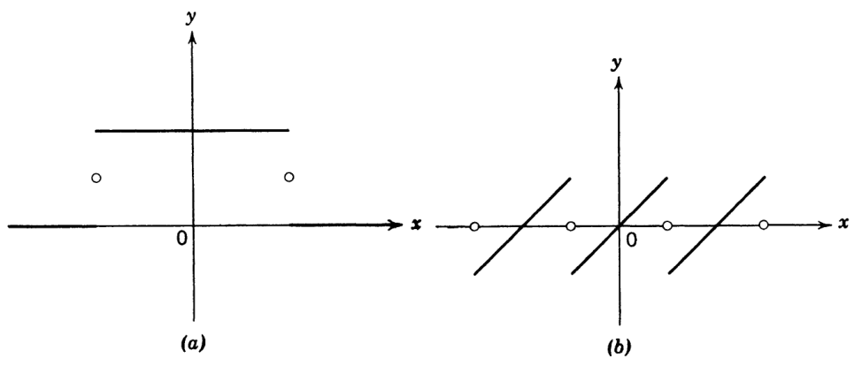
图 1.25 有跳跃间断的两个例子 原注 1（第 35 页） 极限的精确定义将在第 1.7 节给出。在这里的描述中，有直观认识就够了。
原注 2（第 35 页） 以上这些跳跃间断的例子中，函数在间断点从右边和左边所取的极限不同。一个简单的例子是，x ≠ 0 x\ne0 x = 0 f ( x ) = 0 f(x)=0 f ( x ) = 0 x = 0 x=0 x = 0 f ( x ) = 1 f(x)=1 f ( x ) = 1 f f f ξ \xi ξ 可去 的。只要改变 f f f ξ \xi ξ f f f
译者注 本书在这里使用的“跳跃间断”也涵盖上条原注的情形。现代教材通常分开称呼：左右有限极限不同的称为跳跃间断，左右有限极限相同、只须补定或改定一点函数值的称为可去间断。
在上述这类间断中，右极限和左极限都存在。现在来看不满足这一点的间断。其中最重要的是无穷间断 ，即函数趋于无穷大的情形。1 / x 1/x 1/ x 1 / x 2 1/x^2 1/ x 2 x = 0 x=0 x = 0 x → 0 x\to0 x → 0 ∣ f ( x ) ∣ |f(x)| ∣ f ( x ) ∣ x x x 1 / x 1/x 1/ x 1 / x 2 1/x^2 1/ x 2 x = 0 x=0 x = 0 x x x 1 / ( x 2 − 1 ) 1/(x^2-1) 1/ ( x 2 − 1 ) x = 1 x=1 x = 1 x = − 1 x=-1 x = − 1
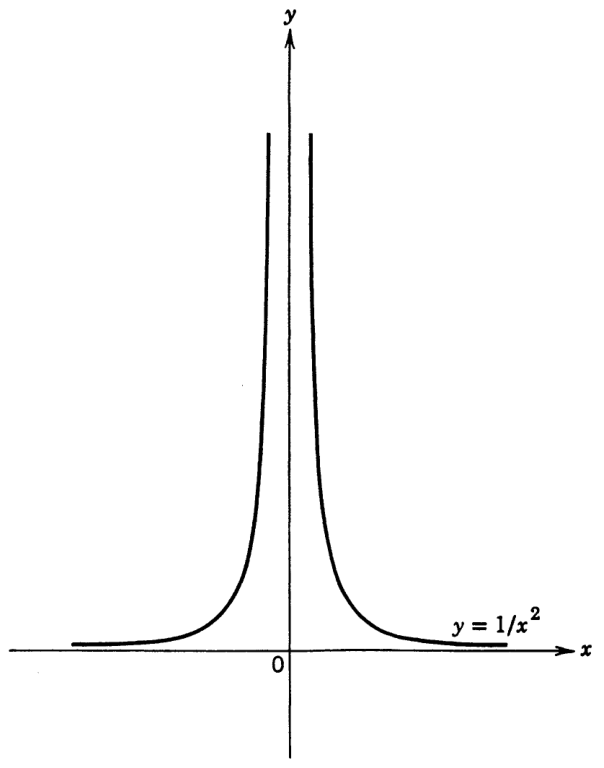
图 1.26 有无穷间断的函数的图像 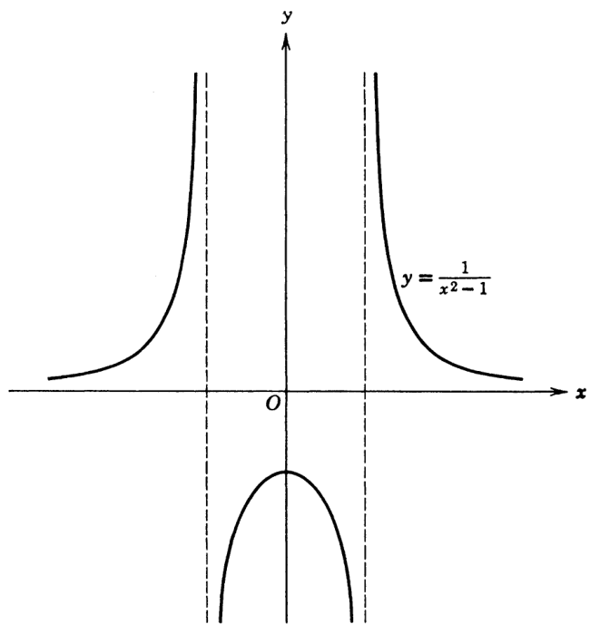
图 1.27 有两个无穷间断点的函数 另一种间断的例子是图 1.28 所示的“分段线性”偶函数 y = f ( x ) y=f(x) y = f ( x ) x x x ± 1 / 2 n \pm1/2^n ± 1/ 2 n + 1 +1 + 1 − 1 -1 − 1 n n n f ( ± 1 / 2 n ) = ( − 1 ) n f(\pm1/2^n)=(-1)^n f ( ± 1/ 2 n ) = ( − 1 ) n 1 / 2 n + 1 < x < 1 / 2 n 1/2^{n+1}<x<1/2^n 1/ 2 n + 1 < x < 1/ 2 n − 1 / 2 n < x < − 1 / 2 n + 1 -1/2^n<x<-1/2^{n+1} − 1/ 2 n < x < − 1/ 2 n + 1 f ( x ) f(x) f ( x ) x x x − 1 -1 − 1 + 1 +1 + 1 x x x x = 0 x=0 x = 0 − 1 -1 − 1 + 1 +1 + 1 f ( x ) f(x) f ( x ) f ( x ) = sin ( 1 / x ) f(x)=\sin(1/x) f ( x ) = sin ( 1/ x )
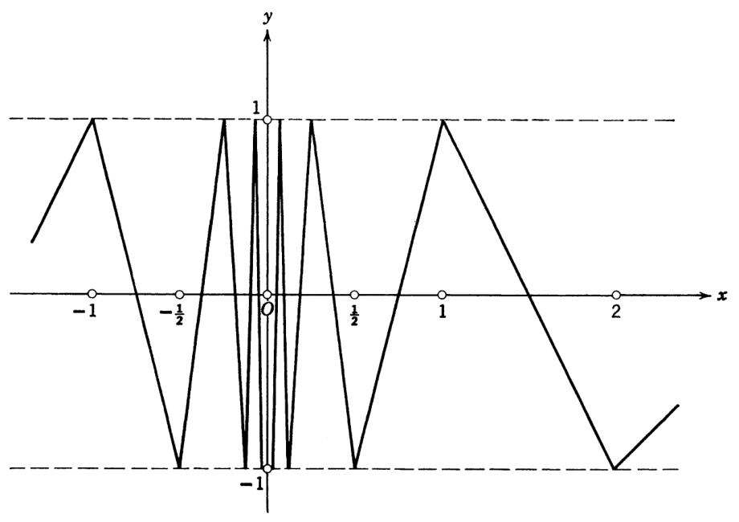
图 1.28 有间断的分段线性振荡函数 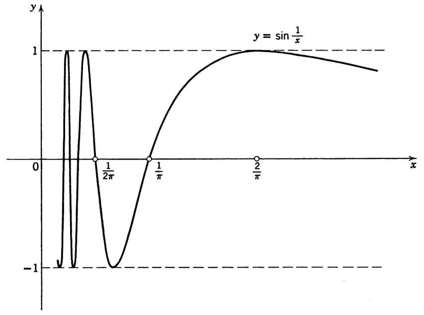
图 1.29 有间断的振荡函数 与此对照，再看一个分段线性函数 y = f ( x ) y=f(x) y = f ( x ) n n n f ( ± 1 / 2 n ) = ( − 1 2 ) n f(\pm1/2^n)=(-\tfrac12)^n f ( ± 1/ 2 n ) = ( − 2 1 ) n x x x x = 0 x=0 x = 0 0 0 0 f ( x ) f(x) f ( x ) y = x sin ( 1 / x ) y=x\sin(1/x) y = x sin ( 1/ x )
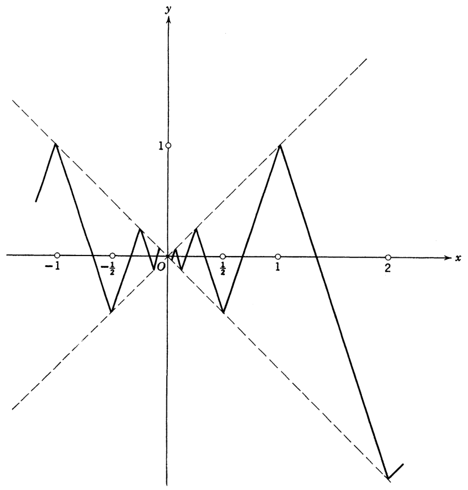
图 1.30 连续的振荡函数 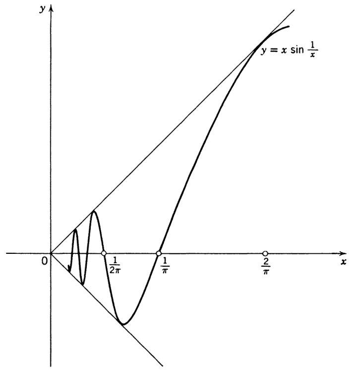
图 1.31 连续的振荡函数 这些例子表明，连续性容许种种出人意料的情形，远非朴素直觉所能尽知。
* 可去间断
像前面最后几个例子那样，原来给定的法则有时并未在某一点（例如 x = 0 x=0 x = 0 x = 0 x=0 x = 0 y = 0 y=0 y = 0 x = 0 x=0 x = 0 f ( 0 ) f(0) f ( 0 ) y = sin ( 1 / x ) y=\sin(1/x) y = sin ( 1/ x ) x = 0 x=0 x = 0
连续模。一致连续性
根据定义，函数 f ( x ) f(x) f ( x ) x 0 x_0 x 0 ϵ > 0 \epsilon>0 ϵ > 0 δ > 0 \delta>0 δ > 0 连续模 ），使定义域内所有满足 ∣ x − x 0 ∣ < δ |x-x_0|<\delta ∣ x − x 0 ∣ < δ x x x ∣ f ( x ) − f ( x 0 ) ∣ < ϵ |f(x)-f(x_0)|<\epsilon ∣ f ( x ) − f ( x 0 ) ∣ < ϵ f f f x x x δ \delta δ x 0 x_0 x 0 ϵ \epsilon ϵ δ ′ \delta' δ ′ ∣ x − x 0 ∣ < δ ′ |x-x_0|<\delta' ∣ x − x 0 ∣ < δ ′ ∣ x − x 0 ∣ < δ |x-x_0|<\delta ∣ x − x 0 ∣ < δ ∣ f ( x ) − f ( x 0 ) ∣ < ϵ |f(x)-f(x_0)|<\epsilon ∣ f ( x ) − f ( x 0 ) ∣ < ϵ δ \delta δ f f f x 0 x_0 x 0 ϵ \epsilon ϵ
正如前面例子所示，一般说来，这个 δ = δ ( ϵ ) \delta=\delta(\epsilon) δ = δ ( ϵ ) ϵ \epsilon ϵ x 0 x_0 x 0 ϵ \epsilon ϵ ϵ 0 \epsilon_0 ϵ 0 ϵ ≤ ϵ 0 \epsilon\le\epsilon_0 ϵ ≤ ϵ 0 ϵ > ϵ 0 \epsilon>\epsilon_0 ϵ > ϵ 0 ϵ = ϵ 0 \epsilon=\epsilon_0 ϵ = ϵ 0 x 0 x_0 x 0 x x x ∣ x − x 0 ∣ < δ 0 |x-x_0|<\delta_0 ∣ x − x 0 ∣ < δ 0 δ \delta δ δ 0 \delta_0 δ 0 f f f x 0 x_0 x 0 局部性质 ，意思是它只取决于 f f f x 0 x_0 x 0
我们已经看到，f f f 在这个区间上连续 。这样，区间内每个 x 0 x_0 x 0 δ = δ ( ϵ ) \delta=\delta(\epsilon) δ = δ ( ϵ ) x 0 x_0 x 0 x 0 x_0 x 0 y y y x x x
若在整个区间上都可以用一个一致的连续模 δ = δ ( ϵ ) \delta=\delta(\epsilon) δ = δ ( ϵ ) x 0 x_0 x 0 f f f 一致连续 。也就是说，f ( x ) f(x) f ( x ) ϵ \epsilon ϵ δ \delta δ 任意 满足 ∣ x − x 0 ∣ < δ |x-x_0|<\delta ∣ x − x 0 ∣ < δ x , x 0 x,x_0 x , x 0 ∣ f ( x ) − f ( x 0 ) ∣ < ϵ |f(x)-f(x_0)|<\epsilon ∣ f ( x ) − f ( x 0 ) ∣ < ϵ
原注 1（第 41 页） 这个定义所说的区间可以是闭区间、开区间，也可以是无穷区间。
对于一致连续的函数 y = f ( x ) y=f(x) y = f ( x ) x x x y y y 无论这两点位于区间的哪里 。在某些方面，一致连续性比单纯的局部连续性更接近直观的认识。
例如，函数 f ( x ) = 5 x + 3 f(x)=5x+3 f ( x ) = 5 x + 3 ∣ x − x 0 ∣ < ϵ / 5 |x-x_0|<\epsilon/5 ∣ x − x 0 ∣ < ϵ /5 ∣ f ( x ) − f ( x 0 ) ∣ = 5 ∣ x − x 0 ∣ < ϵ |f(x)-f(x_0)|=5|x-x_0|<\epsilon ∣ f ( x ) − f ( x 0 ) ∣ = 5∣ x − x 0 ∣ < ϵ δ ( ϵ ) = ϵ / 5 \delta(\epsilon)=\epsilon/5 δ ( ϵ ) = ϵ /5
函数 f ( x ) = x 2 f(x)=x^2 f ( x ) = x 2 x x x x x x x 2 x^2 x 2 x x x [ a , b ] [a,b] [ a , b ] x x x x 0 x_0 x 0 ∣ x − x 0 ∣ < δ |x-x_0|<\delta ∣ x − x 0 ∣ < δ
∣ f ( x ) − f ( x 0 ) ∣ = ∣ x 2 − x 0 2 ∣ = ∣ x − x 0 ∣ ∣ x + x 0 ∣ ≤ 2 ∣ x − x 0 ∣ ( ∣ b ∣ + ∣ a ∣ ) < 2 δ ( ∣ b ∣ + ∣ a ∣ ) = ϵ ,
\begin{aligned}
|f(x)-f(x_0)|&=|x^2-x_0^2|=|x-x_0|\,|x+x_0|\\
&\le2|x-x_0|(|b|+|a|)<2\delta(|b|+|a|)=\epsilon,
\end{aligned}
∣ f ( x ) − f ( x 0 ) ∣ = ∣ x 2 − x 0 2 ∣ = ∣ x − x 0 ∣ ∣ x + x 0 ∣ ≤ 2∣ x − x 0 ∣ ( ∣ b ∣ + ∣ a ∣ ) < 2 δ ( ∣ b ∣ + ∣ a ∣ ) = ϵ , 只须取 δ = ϵ / [ 2 ( ∣ b ∣ + ∣ a ∣ ) ] \delta=\epsilon/[2(|b|+|a|)] δ = ϵ / [ 2 ( ∣ b ∣ + ∣ a ∣ )]
当 x ≠ 0 x\ne0 x = 0 f ( x ) = 1 / x f(x)=1/x f ( x ) = 1/ x f ( 0 ) = 0 f(0)=0 f ( 0 ) = 0 a ≤ x ≤ b a\le x\le b a ≤ x ≤ b a , b a,b a , b x , x 0 x,x_0 x , x 0 ∣ x − x 0 ∣ < δ |x-x_0|<\delta ∣ x − x 0 ∣ < δ δ = a 2 ϵ \delta=a^2\epsilon δ = a 2 ϵ
∣ 1 x − 1 x 0 ∣ = ∣ x 0 − x ∣ 1 ∣ x 0 ∣ ∣ x ∣ < δ a 2 = ϵ .
\left|\frac1x-\frac1{x_0}\right|=|x_0-x|\,\frac1{|x_0|\,|x|}<\frac{\delta}{a^2}=\epsilon.
x 1 − x 0 1 = ∣ x 0 − x ∣ ∣ x 0 ∣ ∣ x ∣ 1 < a 2 δ = ϵ . 因此函数在 [ a , b ] [a,b] [ a , b ] f ( x ) = 1 / x f(x)=1/x f ( x ) = 1/ x x 0 > 0 x_0>0 x 0 > 0 x 0 x_0 x 0 a < x 0 < b a<x_0<b a < x 0 < b a , b a,b a , b x x x x 0 x_0 x 0 δ = a 2 ϵ \delta=a^2\epsilon δ = a 2 ϵ x 0 x_0 x 0
以上例子中的连续函数，在它们定义域所包含的任何有界闭区间上都一致连续。这说明了下面一个一般事实，我们将在补充材料第 100 页加以证明。
定理 在有界闭区间上连续的任何函数，都在该区间上一致连续。
区间有界 这项限制不可少，函数 x 2 x^2 x 2 闭 的。例如 y = 1 / x y=1/x y = 1/ x 0 < x < 1 0<x<1 0 < x < 1 x x x x x x y y y ( 0 , 1 ) (0,1) ( 0 , 1 ) δ ( ϵ ) \delta(\epsilon) δ ( ϵ ) x 0 < δ x_0<\delta x 0 < δ x = 1 2 x 0 x=\tfrac12x_0 x = 2 1 x 0 ∣ 1 / x − 1 / x 0 ∣ = 1 / x 0 |1/x-1/x_0|=1/x_0 ∣1/ x − 1/ x 0 ∣ = 1/ x 0 x 0 x_0 x 0 ϵ \epsilon ϵ δ ( ϵ ) \delta(\epsilon) δ ( ϵ )
利普希茨连续性与赫尔德连续性
在前面那些在区间 [ a , b ] [a,b] [ a , b ] δ ( ϵ ) \delta(\epsilon) δ ( ϵ ) ϵ \epsilon ϵ 利普希茨连续 的函数中。其定义是，存在固定的 L L L x 1 , x 2 x_1,x_2 x 1 , x 2
∣ f ( x 2 ) − f ( x 1 ) ∣ ≤ L ∣ x 2 − x 1 ∣ ,
|f(x_2)-f(x_1)|\le L|x_2-x_1|,
∣ f ( x 2 ) − f ( x 1 ) ∣ ≤ L ∣ x 2 − x 1 ∣ , 即所谓利普希茨条件 。这就是说，区间内任取两相异点所构成的“差商”
f ( x 2 ) − f ( x 1 ) x 2 − x 1
\frac{f(x_2)-f(x_1)}{x_2-x_1}
x 2 − x 1 f ( x 2 ) − f ( x 1 ) 的绝对值都不超过固定的有限数 L L L y = f ( x ) y=f(x) y = f ( x ) x x x L L L δ ( ϵ ) = ϵ / L \delta(\epsilon)=\epsilon/L δ ( ϵ ) = ϵ / L ∣ x 2 − x 1 ∣ < ϵ / L |x_2-x_1|<\epsilon/L ∣ x 2 − x 1 ∣ < ϵ / L ∣ f ( x 2 ) − f ( x 1 ) ∣ < ϵ |f(x_2)-f(x_1)|<\epsilon ∣ f ( x 2 ) − f ( x 1 ) ∣ < ϵ ϵ \epsilon ϵ δ ( ϵ ) = c ϵ \delta(\epsilon)=c\epsilon δ ( ϵ ) = cϵ L = 1 / c L=1/c L = 1/ c
第二章将会说明，我们所遇到的函数，大多在除去某些孤立点后都是利普希茨连续的。这是因为在任何不包含这些点的闭区间内，它们的导数都有界。然而，利普希茨连续性只是一致连续性的充分条件，并非必要条件。一个最简单的例子是 x ≥ 0 x\ge0 x ≥ 0 f ( x ) = x f(x)=\sqrt{x} f ( x ) = x x 0 = 0 x_0=0 x 0 = 0
f ( x ) − f ( 0 ) x − 0 = 1 x
\frac{f(x)-f(0)}{x-0}=\frac1{\sqrt{x}}
x − 0 f ( x ) − f ( 0 ) = x 1 在 x x x L L L δ ( ϵ ) \delta(\epsilon) δ ( ϵ ) ϵ \epsilon ϵ δ ( ϵ ) = ϵ 2 \delta(\epsilon)=\epsilon^2 δ ( ϵ ) = ϵ 2
函数 x \sqrt{x} x 赫尔德连续 函数。它们对于区间内一切 x 1 , x 2 x_1,x_2 x 1 , x 2 赫尔德条件
∣ f ( x 2 ) − f ( x 1 ) ∣ ≤ L ∣ x 2 − x 1 ∣ α ,
|f(x_2)-f(x_1)|\le L|x_2-x_1|^\alpha,
∣ f ( x 2 ) − f ( x 1 ) ∣ ≤ L ∣ x 2 − x 1 ∣ α , 其中 L , α L,\alpha L , α α \alpha α 0 < α ≤ 1 0<\alpha\le1 0 < α ≤ 1 α = 1 \alpha=1 α = 1
显然，对于赫尔德连续函数 f f f δ = L − 1 / α ϵ 1 / α \delta=L^{-1/\alpha}\epsilon^{1/\alpha} δ = L − 1/ α ϵ 1/ α δ \delta δ ϵ 1 / α \epsilon^{1/\alpha} ϵ 1/ α f ( x ) = x f(x)=\sqrt{x} f ( x ) = x α = 1 2 \alpha=\tfrac12 α = 2 1
∣ x 2 − x 1 ∣ ≤ ∣ x 2 − x 1 ∣ 1 / 2 .
|\sqrt{x_2}-\sqrt{x_1}|\le|x_2-x_1|^{1/2}.
∣ x 2 − x 1 ∣ ≤ ∣ x 2 − x 1 ∣ 1/2 . 事实上，先注意到 ∣ x 2 − x 1 ∣ ≤ ∣ x 2 + x 1 ∣ |\sqrt{x_2}-\sqrt{x_1}|\le|\sqrt{x_2}+\sqrt{x_1}| ∣ x 2 − x 1 ∣ ≤ ∣ x 2 + x 1 ∣ ∣ x 2 − x 1 ∣ |\sqrt{x_2}-\sqrt{x_1}| ∣ x 2 − x 1 ∣ x \sqrt{x} x δ ( ϵ ) = ϵ 2 \delta(\epsilon)=\epsilon^2 δ ( ϵ ) = ϵ 2
更一般地，0 < α ≤ 1 0<\alpha\le1 0 < α ≤ 1 f ( x ) = x α f(x)=x^\alpha f ( x ) = x α α \alpha α
赫尔德连续函数仍未包括全部一致连续函数。不难构造出这样的连续函数，对它们来说，ϵ \epsilon ϵ
e. 介值定理。反函数
从直观上看，连续函数既然没有“跳跃”，从一个值变到另一个值时，自然要经过其间的一切值。所谓介值定理 所表述的正是这一事实（严格证明见补充材料第 100 页）。
介值定理 设函数 f ( x ) f(x) f ( x ) a , b a,b a , b f ( a ) f(a) f ( a ) f ( b ) f(b) f ( b ) η \eta η a a a b b b ξ \xi ξ f ( ξ ) = η f(\xi)=\eta f ( ξ ) = η
从几何上说，若连续函数 f f f ( a , f ( a ) ) (a,f(a)) ( a , f ( a )) ( b , f ( b ) ) (b,f(b)) ( b , f ( b )) y = η y=\eta y = η 相交 （图 1.32）。当然，交点也可能有好几个。在一个重要的情形下，即 f ( x ) f(x) f ( x ) f f f ξ \xi ξ η \eta η
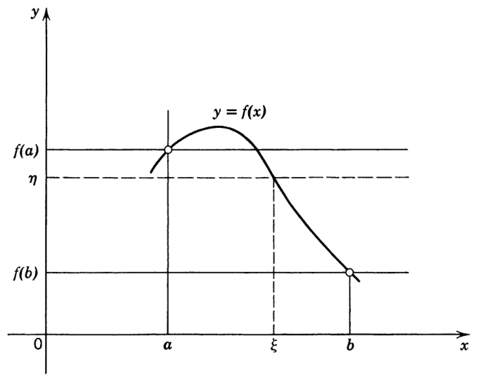
图 1.32 介值定理 例如，函数 f ( x ) = x 2 f(x)=x^2 f ( x ) = x 2 1 ≤ x ≤ 2 1\le x\le2 1 ≤ x ≤ 2 f ( 1 ) = 1 f(1)=1 f ( 1 ) = 1 f ( 2 ) = 4 f(2)=4 f ( 2 ) = 4 1 1 1 4 4 4 η = 2 \eta=2 η = 2 1 1 1 2 2 2 ξ \xi ξ ξ 2 = 2 \xi^2=2 ξ 2 = 2 2 \sqrt2 2
译者注 这里的“存在”与“唯一”来自不同的条件。连续性保证水平线不会落在函数值的空隙里，严格单调性保证它只会与图像相交一次。例如在 [ − 2 , 2 ] [-2,2] [ − 2 , 2 ] x 2 x^2 x 2 y = 2 y=2 y = 2
反函数的连续性
设 f ( x ) f(x) f ( x ) a ≤ x ≤ b a\le x\le b a ≤ x ≤ b f ( a ) ≤ η ≤ f ( b ) f(a)\le\eta\le f(b) f ( a ) ≤ η ≤ f ( b ) η \eta η ξ \xi ξ a ≤ ξ ≤ b a\le\xi\le b a ≤ ξ ≤ b f ( ξ ) = η f(\xi)=\eta f ( ξ ) = η α = f ( a ) \alpha=f(a) α = f ( a ) β = f ( b ) \beta=f(b) β = f ( b ) η \eta η ξ \xi ξ ξ = g ( η ) \xi=g(\eta) ξ = g ( η ) η \eta η [ α , β ] [\alpha,\beta] [ α , β ] g g g f f f 反函数 。较大的 ξ \xi ξ η = f ( ξ ) \eta=f(\xi) η = f ( ξ ) g g g g g g
原注 1（第 45 页） 上面表述的介值定理在 f ( x ) < η < f ( b ) f(x)<\eta<f(b) f ( x ) < η < f ( b ) ξ \xi ξ η = f ( a ) \eta=f(a) η = f ( a ) η = f ( b ) \eta=f(b) η = f ( b ) ξ = a \xi=a ξ = a ξ = b \xi=b ξ = b
译者注 原注的不等式左端印作 f ( x ) f(x) f ( x ) f ( a ) f(a) f ( a )
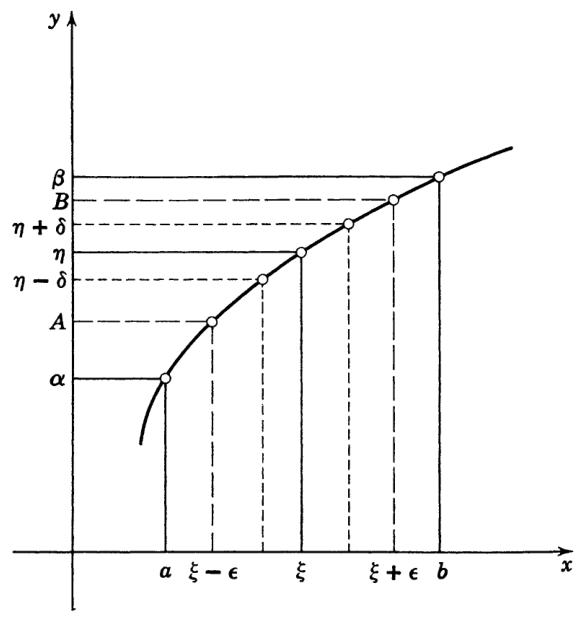
图 1.33 单调连续函数的反函数的连续性 事实上，任取 α \alpha α β \beta β η \eta η ξ = g ( η ) \xi=g(\eta) ξ = g ( η ) a = g ( α ) a=g(\alpha) a = g ( α ) b = g ( β ) b=g(\beta) b = g ( β ) ϵ \epsilon ϵ a < ξ − ϵ < ξ + ϵ < b a<\xi-\epsilon<\xi+\epsilon<b a < ξ − ϵ < ξ + ϵ < b η \eta η y y y ∣ g ( y ) − g ( η ) ∣ < ϵ |g(y)-g(\eta)|<\epsilon ∣ g ( y ) − g ( η ) ∣ < ϵ f f f η = f ( ξ ) \eta=f(\xi) η = f ( ξ ) f ( ξ − ϵ ) = A f(\xi-\epsilon)=A f ( ξ − ϵ ) = A f ( ξ + ϵ ) = B f(\xi+\epsilon)=B f ( ξ + ϵ ) = B δ \delta δ
A < η − δ < η + δ < B .
A<\eta-\delta<\eta+\delta<B.
A < η − δ < η + δ < B . 任取满足 η − δ < y < η + δ \eta-\delta<y<\eta+\delta η − δ < y < η + δ y y y x = g ( y ) x=g(y) x = g ( y ) A < y < B A<y<B A < y < B g ( A ) < g ( y ) < g ( B ) g(A)<g(y)<g(B) g ( A ) < g ( y ) < g ( B ) ξ − ϵ < g ( y ) < ξ + ϵ \xi-\epsilon<g(y)<\xi+\epsilon ξ − ϵ < g ( y ) < ξ + ϵ ∣ g ( y ) − g ( η ) ∣ < ϵ |g(y)-g(\eta)|<\epsilon ∣ g ( y ) − g ( η ) ∣ < ϵ η \eta η g g g α \alpha α β \beta β
译者注 现在自变量是 y y y ϵ \epsilon ϵ ξ \xi ξ f f f A , B A,B A , B δ \delta δ
关系 y = f ( x ) y=f(x) y = f ( x ) x = g ( y ) x=g(y) x = g ( y ) x , y x,y x , y y = f ( x ) y=f(x) y = f ( x ) ( x , y ) (x,y) ( x , y ) x = g ( y ) x=g(y) x = g ( y ) g g g y = g ( x ) y=g(x) y = g ( x ) x x x y y y y = g ( x ) y=g(x) y = g ( x ) y = f ( x ) y=f(x) y = f ( x ) y = x y=x y = x x ≥ 0 x\ge0 x ≥ 0 f ( x ) = x 2 f(x)=x^2 f ( x ) = x 2 g ( x ) = x g(x)=\sqrt{x} g ( x ) = x
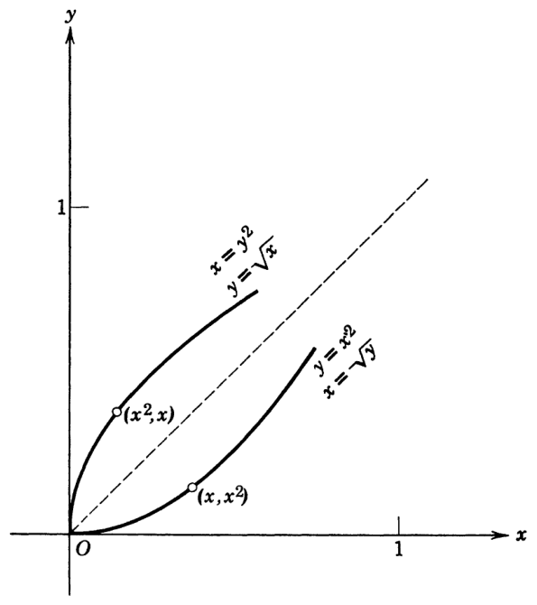
图 1.34 互为反函数